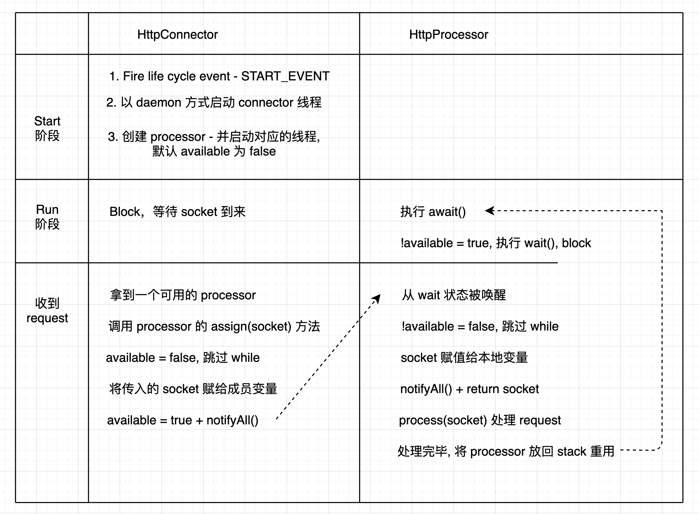

Chapter4 presents Tomcat 4’s default connector.
This connector has been deprecated in favor of a faster connector called Coyote. Nevertheless, the default connector is simpler and easier to understand.
Tomcat 的 connector 是一个独立的模块，现存比较知名的实现有 Coyote, mod_jk, mod_jk2 和 mod_webapp. Tomcat 的 connector 实现需要遵循以下标准
- 必须实现 org.apache.catalina.Connector 接口
- 创建的 request 必须实现 org.apache.catalina.Request 接口
- 创建的 response 必须实现 org.apache.catalina.Response 接口
Tomcat4 默认的 connector 做的事情和第三章的没什么区别，它会一直 stand by 等待 Http request 的到来，然后创建 request 和 response 对象，并调用 org.apache.catalina.Container 实现类的 invoke 方法。
1 | public void invoke( |
invoke 方法中，container 会加载 servlet，调用其 service 方法，同时附带管理 session，log 等资源的功能
默认的 tomcat connector 和 ex03 有点不同，它提供了 pool 机制来减小创建对象的开销，同时更多的使用 char arry 代替 string 提高效率。
PS: 这节里面的多线程操作，值得好好看一看，之前一直都没有机会接触相关的知识点 (●°u°●) 」- 复习了小半个月，都快看吐了
默认的 connector 实现了所有 HTTP 1.1 的特性，同时也支持老版本的 HTTP 协议，比如 0.9 和 1.0. 理解 1.1 的协议对后面理解 connector 实现原理很重要。之后我们会介绍 tomcat 自定义的 connector 接口(org.apache.catalina.Connector).
HTTP 1.1 New Features
下面介绍 HTTP 1.1 的新特性
Persistent Connections
HTTP 1.1 之前的协议，在请求完成后会关闭链接。但是现在一个网页请求中可能会包含很多资源，比如 images， applets 等。如果这些资源都通过不同的 connection 下载，那么整个过程会很慢。使用 persistent connection 之后，连接将被复用, 减小资源开销。
persistent connection 是 HTTP 1.1 的默认配置，你也可以通过 connection: keep-alive 属性显示的指定。
Chunked Encoding
persistent connection 导致的一个结果是，发送方必须在发送 request 或 response 时指定自己发送的内容的长度。但是通常情况下服务器端并不能做到这一点, 服务器发送内容的时候，是准备一点，发送一点，所以很可能发送的时候根本不知道将要发送多少内容。比如 servlet 会在一些数据准备好后就发送，并不会等到所有数据都完备再开始。
HTTP 1.0 的时候并不需要指定这个长度属性，连接会一直保持直到接收到 -1 这个结束标志符。
HTTP 1.1 通过 transfer-encoding 这个标志位表示将要发送的流长度。每个 chunk 数据发送前都会先发送一个 长度 + CR/LF 的行表示后面要发送的数据长度。在通讯结束后回发送一个 0 长度的 chunk 表示 transaction 结束。如下所示，我们以发送文字 I'm as helpless as a kitten up a tree. 为例
发送时，这段文字被分成 2 个 chunks，第一个 chunk 长度为 29 第二个 chunk 长度为 9 那么体现在实际的 request 中为如下情况
1 | 1D\r\n |
1D 是 16 进制的 29， 表示第一个 chunk 包含 29 个 bytes. 0\r\n 表示通信结束。
Use of the 100(Continue) Status
当客户端发送的 request body 很大时，他会在 header 中包含 100-continue 属性来和服务器端确认是否接收来提高效率，避免资源浪费(传到一半被拒绝被拒绝的情况)。服务器如果接收这种 request， 则返回 HTTP/1.1 100 Continue
The Connector interface
Tomcat connector 必须实现 org.apache.catalina.Connector 接口，这个接口有很多方法，但是最主要方法有四个
- getContainer
- setContainer
- createReqeust
- createResponse
重点：Connector 和 Container 是 1 对 1 的关系，Connector 和 Processor 是 1 对多的关系
The HttpConnector Class
实现 org.apache.catalina.Connector 接口使它能和 Catalina 整合
实现 java.lang.Runnable 使他能多线程运行
Lifecycle 接口用于管理每一个 catalina component 的生命周期，具体内容第六章介绍
Creating a Server Socket
HttpConnector 的 initialize() 方法会调用 open 方法生成 serverSocket 对象。open 中通过工厂方法拿到 ServerSocket, 参见 ServerSocketFactory 和对应的实现 DefaultServerSocketFactory
1 | /** |
lazy model 的方式拿到工厂实例。然后调用 factory.createSocket(port, acceptCount) 创建 socket.
Maintaining HttpProcess Instances
HttpContainer 中声明了一个 java.io.Stack 类型的变量存储 processor 的实例，实现类似 pool 的效果。
1 | private Stack processor = new Stack(); |
HttpConnector 中定义了两个变量(minProcessors/maxProcessors)来控制这个 stack 的大小, 在启动的时候，服务器默认创建 minProcessors 数量的 processor 备用。随着 request 的增加，这个数量也会增加知道等于 maxProcessors。如果 request 再增加，之后的 request 都会被忽略。如果你想要访问数量没有限制，可以设置 maxProcessor 为负数。
PS: HttpConnector 中通过 curProcessor 这个变量表示当前可用的 processor 数量
1 | public void start() throws LifecycleException { |
processor 创建完后，通过调用 recycle 方法将 processor 回收到栈中。processor 负责解析 request 内容，他的构造函数的参数中包含 HttpConnector, 在构造的过程中，会调用 connector 中创建 request 和 response 的方法。
1 | public HttpProcessor(HttpConnector connector, int id) { |
Serving HTTP Requests
HttpConnector 的主要逻辑都在 run 方法中，该方法通过 while 循环等待发送过来的响应，直到服务器停止。
1 | public void run() { |
createProcessor 工作流程
- 如果 stack 中有，则返回
- 如果没有，判断是否达到上限，没有就创建
- 达到上限，返回并关闭 socket
- 上限为 -1，创建 processor
processor 执行 assign() 方法后立即返回，后续工作由 processor 在单独的线程中完成
The HttpProcessor Class
HttpProcessor 的功能和前一章中的 processor 是一样的，本章中的实现多了 assign 之后的多线程功能。下面将具体介绍他的实现原理。
和 HttpConnector 类似 HttpProcessor 也实现了 Runnable 和 Lifecycle 接口
这里主要探究 processor 的 assign 方法是如何使用多线程来支持 tomcat 同时处理多个 request 的功能的
For each HttpProcessor instance the HttpConnector creates, its start method is called, effectively starting the “processor thread” of the HttpProcessor instance.
HttpConnector 的 start() 方法被调用时，这个方法中有一个名为 newProcessor() 的方法，具体实现如下：
1 | /** |
可以看到，在创建 HttpProcessor 对象之后，processor thread 立马就被启动了
processor 的 run 方法实现如下
1 | /** |
当 connector 启动时 processor thread 也会一起启动，然后卡在 await 这里一直等待。当 HttpConnector 接受到 request 之后会调用 processor.assign(socket) 方法。
这里需要注意的是 assign() 方法是在 connector thread 中调用的，而 await() 方法是在 processor thread 中被调用的。这两者是怎么通信的呢？他们是通过 available flag 和 Object 自带的 wait(), notifyAll() 方法控制调度的。
PS: wait() 方法使得当前线程保持等待一直到另一个线程调用 notify() 或者 notifyAll() 方法
HttpConnector 中 会调用 processor 的 assign 方法
1 | /** |
HttpProcessor 中 await 的实现
1 | /** |
简单图示一下交互过程

两个 thread 交互描述：
服务器启动时回执行 connector 的 start 方法，这个方法回启动 connector 线程和 processor 线程。connector 线程启动后 block 在等待 request 的地方，而 processor 线程启动后 block 在 wait()。
这时如果 connector thread 中接收到一个 request， connector 会从 stack 中取出一个可用的 processor 并调用 assign(socket) 方法。assign 方法会判断 available flag, 初始值为 false， 跳过 while, 将 socket 复刻到成员变量，设置 available 为 true, 唤醒所有等待的线程。
这时 process thread 的 await() 方法从 wait() 中被唤醒过来，跳出 while 循环将 socket 复刻到 local 变量中，并将 available 设置成 false，调用 notifyAll() 唤醒其他线程。接着跳出 await() 方法，执行其余方法，包括解析 socket，并回收重用 processor。然后继续执行 while block 在 await 中，如此循环。
问题：
Q：为什么 await 要使用 local variable 类型的 socket 而不是直接返回传入的 socket
A: 如果没有用 local 的 socket， 那么 socket 还是 connector 中的那个 socket，我们用 local 的复刻之后返回，这个 socket 就可以用来处理下一个 request 了。
Q: 为什么 await 需要调用 notifyAll() 方法
A: 书上给的答案是防止这个时候 processor 再次收到一个 socket，此时 assign() 中 available 为 true，会进入到 wait 方法，需要主动唤醒。但是从我的理解来看，这种情况压根不会发生才对啊，同一个 processor 此时应该接受不到其他 socket 了才对。不知道是不是我理解有问题。
Request Objects / Response Objects
default connector 的 request 实现采用 org.apache.catalina.Request 接口. 对应的实现基础类是 RequestBase，他的子类是 HttpRequest. 最终实现类是 HttpRequestImpl. 这些类也有各自的 Facade 类。 UML 示例如下
response 的关系图和 request 基本一致
Process Requests
这节主要介绍 HttpProcessor 的 process 方法，它主要做了下面几件事
- parseConnection - 获取地址并塞到 request 中
- parseRequest - 同上节
- parseHeader - 解析 header 并塞到 request 中
- recycle response + request - 复用对象，相比于上一节完善了很多
process 定义了一些 flag，比如 ok 表示处理过程中没有出现异常，finishResponse 表示 finishResponse 方法要被调用。
1 | boolean ok = true; |
- keepAlive - 持久链接
- stopped - HttpProcess instance has been stopped by connector
- http11 - request 是从支持 http11 的 client 发出来的
在 Tomcat 的 default connector 实现中，用户和 HttpProcessor 是隔离的，但是用户可以通过设置 connector 的 buffer size 间接设置 processor 的 buffer size.
1 | SocketInputStream input = null; |
接下来是一个 while 循环读取 inputStream 中的数据
1 | keepAlive = true; |
解析过程中，一开始设置 finishResponse 的值，并做一些 request 和 response 的初始化
1 | finishResponse = true; |
之后开始 parse connection，request 和 headers
1 | // Parse the incoming request |
parseConnection 可以获取 protocol 信息，这个值可能是 0.9， 1.0 或者 1.1. 如果是 1.0 则 keepAlive 会设置成 false。如果 request 头中包含 100-contiue 则会在 parseHeaders 中将 sendAck 设置成 true。
如果是 1.1 的协议，它也会相应 100-continue 并且会检查是否允许 chunking
1 | if (http11) { |
ackRequest 会检测 sendAck 的值，如果为 true 则返回 HTTP/1.1 100 Continue /r/n/r/n. parse 过程中如果有异常，则 ok 和 finishResponse 会被置位。parse 结束后 request 和 response 会传给 container 调用
1 | // Ask our Container to process this request |
如果此时 finishResponse 还是 true 则调用 requeset/response 的 finishResponse 方法, flush 流
1 | // Finish up the handling of the request |
最后检查 Connection 的值并置位，回收 request 和 response
1 | // We have to check if the connection closure has been requested |
然后重复 while 或者结束 socket 通信
1 | try { |
Parsing the Connection
parseConnection 会获取 address 和 port 在 request 中赋值
1 | private void parseConnection(Socket socket) throws IOException, ServletException { |
Parsing the Request
和前一章一样的实现
Parsing Headers
通过 character arrays 操作而非 String 来提高效率
The Simple Container Application
这里的 container 是一个简易版本，实现了 catalina 中的 Container 接口以配合 connector 使用。只实现了 invoke 接口，里面的功能是加载 servlet class 并执行